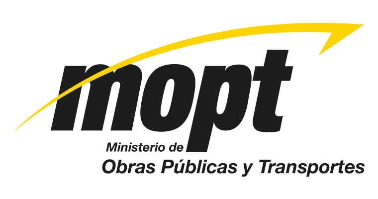
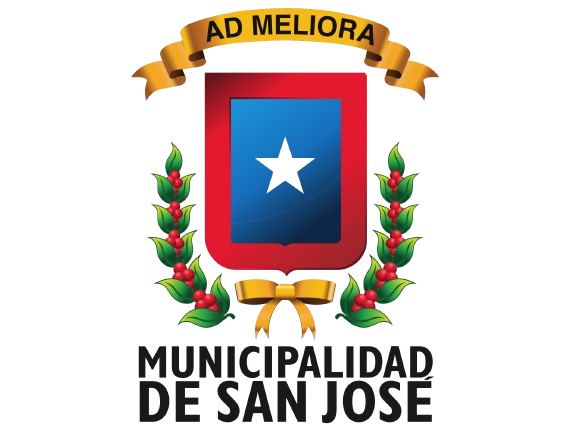

Nuestra Misión
Identificar y reportar huecos en las calles para mejorar la infraestructura vial de Costa Rica, facilitando la comunicación entre ciudadanos y las autoridades.
Nuestra Visión
Ser el canal principal para promover el mantenimiento de las carreteras, asegurando la seguridad vial y contribuyendo al desarrollo del país.
Colaboramos con:
-  Ministerio de Obras Públicas y Transportes (MOPT)
 Consejo Nacional de Vialidad (CONAVI)
Consejo Nacional de Vialidad (CONAVI)-  Municipalidades de Costa Rica
¿Quiénes Somos?
Somos un grupo de estudiantes comprometidos con la mejora de la infraestructura vial del país, desarrollando esta plataforma como una iniciativa para facilitar la comunicación entre la ciudadanía y las autoridades competentes.